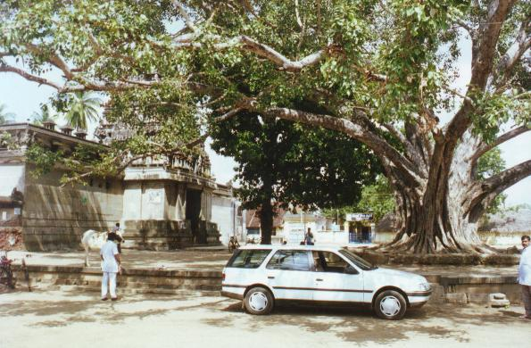
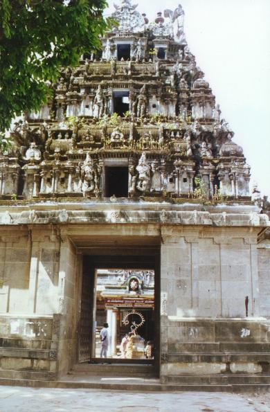

vēṭkaḷam
- Identifier: KV02
- Modern Name (NIC):
- Modern Name (M.I.): vēṭkaḷam
- Modern Name (Govt Press): tiruvēṭkaḷam
- Modern Name: tiru vēṭkaḷam
- Village: Annamali Nagar
- Modern District & Taluk: kaṭalūr DT (citampāram TK)
- Old administrative location: South Arcot DT (Chidambaram TK)
- Nearby town: citamparam
- Visit date: 2000/02/11
- GPS reading: 11deg. 23.47 N & 79deg. 43.18 E
- Railway station: Citamparam
- Longit. 79 deg. 44'; Latit. 11 deg. 24' [KV02]
- C.D.Maclean-3: entry: , p. , col. , lines
[ , lat. deg. ', long. deg. ']
- Location: according to PK: Cōḻa Nāṭu, Kāvēri Vaṭa Kari (KV02)
- Name inside hymns:
- Name inside PK:
- Rank inside third volume of PIFI: 270
- Rank inside Civastala Mañcari: 268
- Rank on PY576 map:
- Total number of patikam-s: 2
- Campantar: 1 patikam
- Appar: 1 patikam
5 pictures taken on 2000/02/11 (by JLC)




Note (VMS):
This is the 2nd shrine on the North bank of the river Kāviri;
now it is within the campus of the Aṇṇāmali University.
- Patikam 1_39
- Patikam 5_42